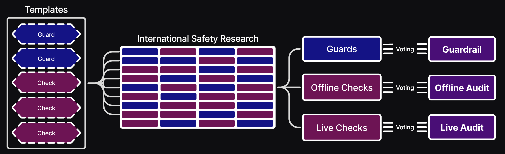
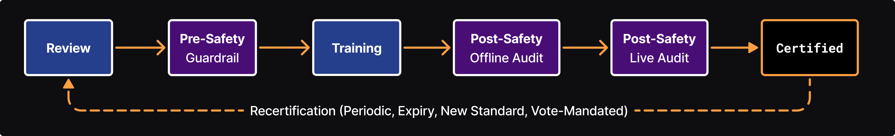
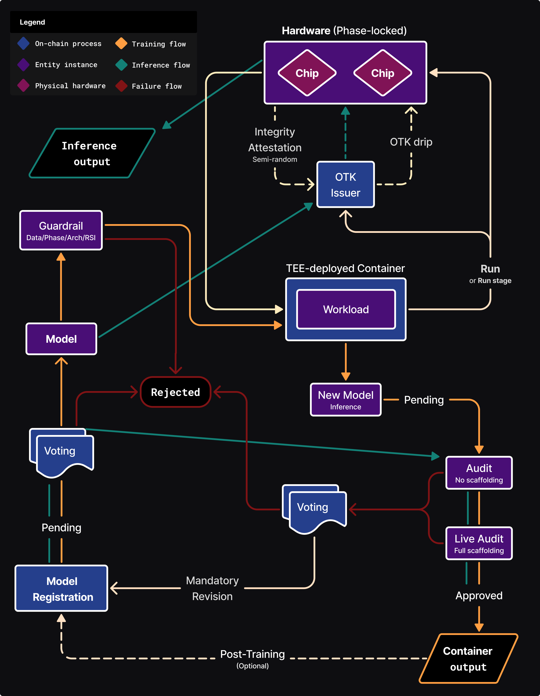

International Hybrid-Technical
AI Safety
Governance
International Hybrid-Technical
AI Safety
Governance
A Foundational Framework for Frontier AI Safety Standards
To provide the tools and infrastructure
to actualize AI safety
standards, globally.
AI safety is a global issue that implicitly requires international coordination.
An actionable international AI safety governance solution for frontier AI development utilizing
collaborative verifiable safety, decentralized blockchain coordination, and automated technical
enforcement with meaningful human-in-the-loop orchestration.
An open-source, not-for-profit non-cryptocurrency-based Decentralized Autonomous Organization (DAO) multilaterally developed and operated - enforced by nation states, adopted by the AI industry and integrated into AI-compute datacenters.
Enabling global coordination between policy makers, safety experts and industry with tiered strong consensus voting, enabling dynamic adaptability and control in an evolving technical landscape. Setting beneficial red-lines to the race towards Artificial General Intelligence (AGI) while preventing critical AI risk.
Building on existing research in AI safety, AI governance, technical governance, compute governance, verifiable safety, specialized compute hardware (on/off chip), Trusted Execution Environments (TEEs) & Trusted Capable Model Environments (TCMEs).
Mission Statement
Problems & Solutions
AI safety is either achieved globally or not at all.
Problems
Establishing AI Safety Governance is fraught with:- Poor coordination across domains and stakeholders
- Geopolitical tensions and strategic vulnerabilities
- Difficulty in handling decentralized compute
- Overregulation that stifles innovation
- Delays in oversight and enforcement
- Double standards
Solutions
Genuine coordination arises out of mutual need.- International: Levels the playing field, setting race rules to the of benefit all stakeholders.
- Hybrid-Technical: Combines effective human oversight with robust automated compliance.
- Blockchain DAO Offers universal, transparent, collaborative oversight with implicit due diligence, making it adversarial-hardened, verifiable and adaptable.
A strong solution necessitates multilateral government and intra-industry participation on AI development, AI-compute datacenters and specialized hardware. If it is to be accepted by stakeholders, the solution cannot be centralized or sovereign.
This solution is not intended to supersede existing governance or AI lab safety. It provides the foundational layer allowing individual nations and AI labs to build off of for further AI governance, policy and safety.
Standardization
Establishing global standards allows global flourishing, providing the base level of confidence for pursuing AI applications across the sciences and economy. Importantly, it enables collaborative safety research.
Market Incentives
Participation grants access to otherwise
restricted datacenters and cutting-edge safety tools which mitigate product blowback.
While it does not entirely replace AI lab safety infrastructures, it provides cost-effective compliance
which reduces regulatory friction.
It grants "certified trust" for AIs with standards that abate market stifling.
Key Features
Foundational Outer Alignment: Ensures AI aligns with bedrock polices set by international consensus.
Standardized Modular Safety:
Embodies safety specs, policies, testing & capability red-lines which is applied based on an AI's specifics,
(architecture, risk tier, declared intent, purpose and scope (narrow or general)).
It is comprised of Pre-Compute and Post-Compute safety,
consisting of voted-in safety research in the form of Probes
and Audits.
Modular collaborative safety is achieved by
templates, standardizing framework components for Pre-Compute Safety Probes & Post-Compute Safety Audits,
AI Architectures & compute Workload flows.
Compliance Enforcement: Automated mechanisms to enforce rules without constant human intervention, while preserving human authority.
Compute Governance: Decentralized handling of compute resources. Hardware verification and management (on/off-chip). Voted on compute budgets.
Training Safety Governance: Restrictions on training data domains (e.g. dangerous knowledge domains). Adherence to standardized AI architectures, mitigating loss-of-control risk.
AI Registry: Human oversight via voting met with automated technical safety. Privacy-preserving with verifiable cryptographic identity. AIs adhere to architecture templates, tier restrictions & declarations.
Personnel Registry: Registered and vetted personnel across policy, safety, software & hardware. Includes a whistle-blower program for reporting issues.
Activity Logging: Logs all framework actions & events for transparent accountability.
Incentivized Adoption: Permitting otherwise restricted access to AI-compute datacenters (per national legal allowences), cost-effective safety infrastructure, reduced regulatory stifling and certified trust for AI systems/models.
Multilateral Voting: Tiered policy and safety personnel with distributed seats vote on AI registry, template designs, the safety standards , and framework architectural decisions.
Open-Source Transparency & Verifiable Trust: All components are auditable, adaptable and adversarial-hardened.
About
AI Safety FrameworkZero's mission:
To bring into being standardized safety-first
global AI development.
It is an open not-for-profit project.
This framework builds off existing research in AI safety and governance.
Drawing heavily on The Oxford Martin AI Governance Initiative's research, specifically Harack, 2025,
as well as Schnabl, 2025, Shumailov, 2025, Scher, 2024, Dalrymple, 2024, and the work of many others.
Inspired by organizations like LawZero & ControlAI, it is therefore Narrow Path compatible.
We are seeking collaborators. Feedback and criticisms are welcome.
Get in touch via the ùïè communityFramework Architecture
Layered blockchain structure:
Layer-1 Mainnet controls core
components which are sharded.
Layer-2 ZK-Rollups are employed
for more dynamic components to reduce mainnet load until vote-actived.
Layer-3 dApps provide user
interfaces.

Templates for AI Architectures, training Workloads, Pre-Compute Safety and Post-Compute Safety provide standardized protocols and better collaborative safety work. Critically important for AI architecture and compute workloads to enforce safe training, for mitigation of risks such as backdoors, recursive self-improvement (RSI) and loss-of-control.
Blockchain Layer-2 ZK-Rollups handle iterative development and voting for probes, audits, and templates - avoiding overload on the Layer-1 mainnet. Once voted in to The Safety Standards, these become immutable on Layer-1. They can only be removed/replaced via voting, ensuring adaptability while maintaining security and trust. As security is paramount, interactive zero-knowledge proofs are used over faster non-interactive zero-knowledge proof (NIZK) as well as quantum-resistant encryption.
Framework Flow
The framework serves to establish the safety standards, which consists of voted-upon standardized safety modules developed by the global community. 
An registered AI attains certification after it has successfully passed the relevant safety standard on a temporary basis. Certifications must be renewed periodically, if it is requested via voting, or after any updates to the relevant safety standard. 
The framework flow governs safety with
human-in-the-loop review,
Pre-Compute Safety (Probes) and
Post-Compute Safety (Audits).
The framework covers inference to a limited degree, essentially restricting on certification. This
is due to inherent limitations in inference governance, as inference is less hardware restricted.
Certification further serves to catalog AIs, enabling regional groups to regulate usage of specific AI based on it's fingerprint.
To mitigate AI situational awareness, classified (off-chain developed, encrypted on-chain) safety templates could be employed to effectively reduce AI situational
awareness. This introduces the potential for discriminant application, enabling biased or sabotaging false-positives and false-negatives,
and would therefore entail adversarial development or assessment via Meta-Safety (Privacy-preserving TEE/TCME assessments on encrypted safety modules).

- Initial AI Registration:
AIs are registered with a 'Pending' status in which it must pass voting, where tiers/budgets are also assigned, before attaining 'Approved' status.
An AI can be registered at any phase, which allows pre-existing AIs to be onboarded. Onboarding an inference-ready AI must undergo Post-Compute Safety to be certified. - TEE-Deployed Container:
After passing Pre-Compute Safety, the AI begins training and it's container is loaded into a TEE for privacy-preserving execution of a compute workload, which are securely decrypted by AI authors at runtime.
During execution the container is sealed & air-gapped (non-interactive with restricted networking). Once a Workload completes, a new 'Pending' inference AI is created.
- Workload Run cycle:
A workload consists of multiple runs conducted by the container, with each run specifying hardware for compute. Each run (or run stage) depends on OTKs (required for hardware operation) tied to compute budgets and hardware integrity. Runs can consist of multiple stages which is needed to handle variations in phase for hardware phase-locking.
Certified inference AIs have an alternative flow, the framework does not directly manage their workloads (input/output), only hardware compute (larger budget OTKs are issued).
- OTK Issuer:
Uses near real-time hardware and model budgets for compute governance. OTKs are cryptographically generated on-chain, tied to a specific run, workload, model, and specific registered hardware, with expiry.
Semi-random OTK "drip" issues keys incrementally during the run, mitigating theft, reuse or decentralized compute gaming.
The OTK "drip" overcomes blockchain latency issues by issuing budget rations, potentially queuing an addition OTK to prevent interruption, never surpassing a run's (or hardware's) allotted budget.
Budgets are managed on-chain, updated throughout a run. The OTK Issuer halts the OTK "drip" on failed hardware integrity attestations.
Inference models are issued OTKs at less frequent increments with higher budget rations, tied to the underlying hardware. - Phase Detection:
Hardware enforces a registered AI's (and its compute workload runs and run stages) phase to prevent phase gaming (e.g. Inference used for unapproved training). This is mitigated via architecture and workload templates, in addition to Pre-Compute Safety.
-
Hardware Verification:
Registered on/off-chip specialized hardware (with approved budgets for compute, memory, etc.) must be physically verified, inspections are carried out via authorized registered personnel (or a group of adversarial personnel when requested), on a periodic basis.
-
Integrity attestations run semi-randomly during a run
to detect
tampering (e.g. BIOS modifications, physical seal breach, relocation, anomalies, etc). This makes
gaming difficult by unpredictability and reduces on-chain load.
In the event of numerous failed hardware integrity attestations, the hardware is revoked. Revoked hardware re-acquires the status 'Pending' which initiates a physical inspection. - Safety Probes and Audits:
Probes and Audits are selected and approved via voting to establish The Safety Standards, with different standards systematically applying depending on a registered AI's specifics.
Pre-Compute Probes mitigate unauthorized data domains, banned architectures/algorithms, backdoors, RSI detection and other violations. Depending on the severity level of a failed Probe, a workload may be cancelled and require re-registration. Post-Compute Audits are comprised of evals, benches, automated red-teaming, and other community safety research (e.g. Guaranteed Safe AI (GSAI)). Both are run inside privacy-preserving TEEs or TCMEs and produce reports without disclosing intellectual property details.
Audits detect violations, malicious capabilities and measure capability levels to enforce red-lines. They can limit general-purpose AI capabilities or restrict narrow AI to their domain. - Post-Workload:
When training completes, a new Inference AI Assembly is created with a 'Pending' status then subsequently run through multiple Audits (Post-Compute Safety). Audits with no scaffolding are run first, followed by 'live' Audits with full scaffolding (web access, tooling, etc).
If approved, the AI container (post-compute training output) is transferred to off-chain storage (managed by AI authors), and can be used for inference.
Failing AIs are assigned a status of 'Rejected' and voted on to determine whether a model is permitted to undergo another attempt. If permitted, a new post-train model is registered with restrictive templates.
These restrictive templates enable post-training with proxy access to the failed model output, which is temporarily stored in a secure vault only accessible by the framework - this prevents exposure even to the AI authors. - Continual Learning Models:
AI that continuously learns outside of explicit training phases are handled via certification expiry. At each expiry, a new snapshot is registered as a separate inference AI Assembly with a new expiry and is rerun through safety Audits. - Handling Inference:
Inference only requires hardware OTKs, issued for registered certified AIs. This is the extent by which the framework directly governs inference.
Verification of certified inference AIs is done via the public cryptographic Container ID (fingerprint), allowing verification by regular datacenters, edge devices and other hardware with model-device mating - however enforcement is out-of-scope of the framework.
Multilateral Voting
Voting determines the policy and safety standards which are enforced by the framework.Participation happens via a tiered structure and is restricted to registered, vetted Policy & Safety personnel.

Ensuring perpetual safety entails continual update cycles, as it does with most cybersecurity. However, the transparent nature of this framework demands increased update frequency due to AI situational awareness. This is where AIs are aware of testing environments, often showing less harmful behavior during testing than in real-world deployments. This reinforces the need for certification renewals, as well as the critical importance of fully-tooled live audits.
Types of voting:
- Safety
- Selecting safety modules for the safety standard, which is a multiple-rounds process
- Approving new framework Templates.
- Reviews
- Approving new AI Assembly registrations and new hardware
- Onboarding existing models
- Setting compute budgets for AI Assemblies and hardware
- Allowing retries for post-workload safety failures
- Reviewing revoked hardware from failed integrity attestations
- Framework
- Tokenomics (e.g. gas price algorithm, gas tax and treasury award)
- Tier changes for AI Assemblies and personnel
- Emergency
- Threat escalation for lower tier reporting
- Threat response:
- Rejecting a model
- Revoking hardware
- Adding/removing safety modules
- Compute budget penalties
Funding & Blockchain Economy
The development of the framework and its infrastructure is an international endeavor.
Financial support is sourced from:
- Nation States:
Participating governments, initially superpowers, augmented by AI taxation at the discretion of each nation. - Supranational Organizations:
Entities such as the UN, or regional alliances that prioritize cross-border coordination and governance. - AI Industry:
Top industry leaders across frontier labs, infrastructure and hardware.
Blockchain Economy
Computational framework activity is metered using gas tokens:
- Closed-Loop Resource Accounting
Gas tokens are not a tradable cryptocurrency (DeFi) rather internal accounting units generated and managed by the framework itself. They function as a closed-loop "resource rationing" mechanism tied exclusively to framework operation. - Algorithmically Defined Pricing
Gas costs are determined through algorithmic rules that can be updated via top tier policy voters. This ensures fairness, prevents volatility, and maintains economic predictability.
Gas tokens measure resource use for:
- Blockchain Operations:
- Consensus mechanism transactions
- Framework state updates
- Infrastructure Overheads
- Operational costs of safety mechanisms
- Hardware inspection costs
- Shared treasury funding
Tokens are purchased for model registration, safety module development, personnel registration, hardware registration, and nations to maintain the framework token pool.
Model training and inference datacenter expenses (compute, electricity, cloud hosting, bandwidth) are not covered by gas tokens. Those are settled externally between datacenters and model registrants. This separation avoids over-delegating control to the framework, serving as an off-system security layer and preserving government regulation on datacenter customers.
Framework Token Pool for Upkeep
A framework token pool is maintained multilaterally to cover operational costs, such as voting, safety module
development, and certification renewals.
Shared Treasury for Incentivized Safety
To incentivize on-framework safety research, a shared treasury is funded per-transaction (Gas tax) after an
initial supply.
For separation of concerns, an established cryptocurrency is used instead of the framework's tokens.
During the multi-round safety selection voting, which determines the specific safety modules used, the
treasury
awards winning modules for each round. Awards bounties are granted for the discovery of bugs and flaws in
safety modules or the underlying framework itself. This mechanism supports existing AI safety organizations,
compensating them for the release of intellectual property.
Limitations
- Time, this solution assume longer timelines to reaching AGI.
- Political will and recognition of the imminent need for collaborative international AI
safety governance.
Nations therefore must become aware of critical AI risk and realize an AI weapons race benefits none. - Not designed for AGI or superintelligence;
focuses on pre-AGI preventative red
lines, as it is not a solution to AI alignment.
Enduring governance of AGI or superintelligence is a fundamental problem in AI safety research. Leading AI scientists hold that it requires superalignment, a concept currently unsolved and possibly unsolvable given the timeline set forth by AI race. - Relies on specialized hardware development and cryptographic security.
There is strong and growing research for the design of specialized hardware with some real-world implementation, however further development is needed. It is the ambition of this framework to enact global coordination and the will to accomplish this.
As frontier models grow in capability, so does their threat to cryptographic security, escalating the need of critical supervision and ongoing reinforcement. This framework's many security layers reduce risk impact along with the transparency for multilateral monitoring. - Limited insight into private model architectures.
Model templates, Probes and Audits reduce, yet do not eliminate, risks from dangerous model architectures. - Model lifecycle monitoring covers a model's phases and continual learning checkpoints.
Continual learning models include all paradigms of online/streaming continual/lifelong‑learning systems (e.g. real‑time/frequent reinforcement‑learning) or with any form of meta-learning (short of RSI). For such models, this framework has limited control, and likely inadequate for more advanced models of this category. Preventative measures and mitigation are achieved by architecture templating, probes, audits, and voting revision calls. - Off-framework training remains possible, though heavily hindered by global mandates on datacenters. Frontier AI advancements could produce model architectures that require minimal compute for training, running on standard hardware.
- Does not fully govern model inference.
While inference at participating AI-compute datacenters can only happen with approved, certified models, governance of inference input/output is beyond the scope of the framework. On-chain framework safeguards for inference input/output could be added to this framework, though enforcement of use would be out-of-scope.
Inference requires fast and low-latency processing at scale, which conflicts with the slower and resource-intensive nature of blockchain. Neither does inference necessitate AI-compute hardware, with current many frontier AIs already runnable on edge devices - a trend likely to hold as AI and hardware continues to advance.
Appendix
- Trusted Execution Environments (TEEs):
TEEs provide secure and privacy-preserving code execution in a sealed virtual environment. They allow the framework to securely deploy AI containers during safety and training. They produce reports without disclosing intellectual property details. They are utilized for Pre/Post-safety and during hardware compute.
Schnabl, 2025 - Trusted Capable Model Environments
(TCMEs):
TCMEs allow a stateless AI model to be instructed to privately verify model container and workload code to detect banned patterns and red-line violations (e.g. RSI, unapproved architecture, or dangerous algorithms). These Trusted Capable Models are 'trusted' in that they act as a neutral mediating party with agreed objective (set of instructions) and output. They operate within a sealed environment, outputting a verification report without disclosing intellectual property details.
They are not infallible as they are limited by the confidence and capabilities of the underlying models (Capable Models). Despite this, they are an invaluable tool to explore closed-source code bases and private post-Workload output.
Shumailov, 2025 - Guaranteed Safe AI (GSAI):
A framework that provides quantifiable guarantees of AI safety, encapsulated an Audit.
"Approaches that follow the GSAI framework aim to provide the level of quantitative safety guarantees we've come to expect from other engineered systems. This is achieved with three core components: an auditable, separable world model, a way to describe what portions of the state space are 'safe' and 'unsafe', and a verifier (which provides an auditable proof certificate that the output satisfy the safety specification in the world model)." - from GSAIS.org - Recursive Self-Improvement (RSI)
Mitigation
RSI is mitigated through (A) AI registration (slowing releases), (B) architecture/workload templates (C) pre-compute safety and (D) compute budgets. It is important to note that total elimination of these concerns is not feasible given the development of novel architectures, paradigms and algorithmic improvements. - Phase Detection:
Reliably detecting a model's Phase requires adjustments, and may even become infeasible as architectures and hardware advance. The variables for determining phase are: Compute, Energy Use, Data size, Precision, Memory Usage, Batch Size, Latency Focus, Accelerator Use, Workload Type, Training Duration and Output.